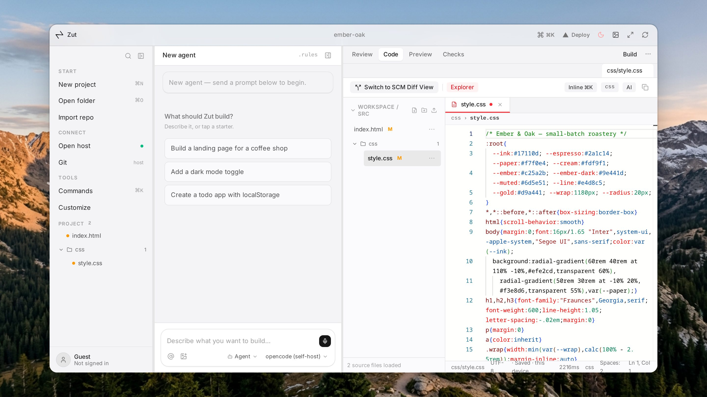
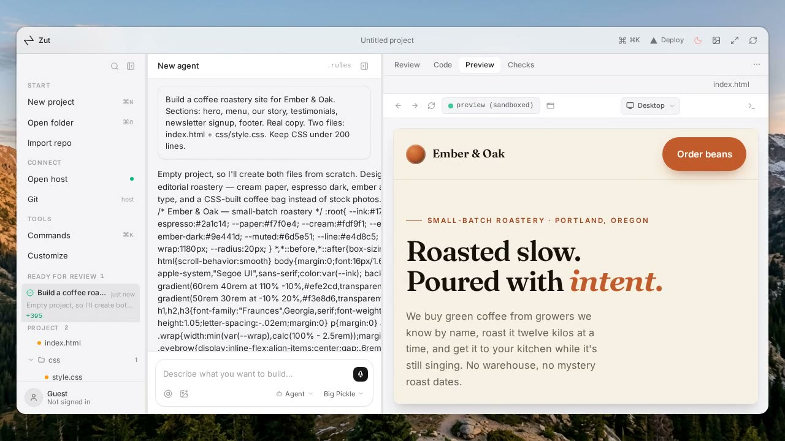
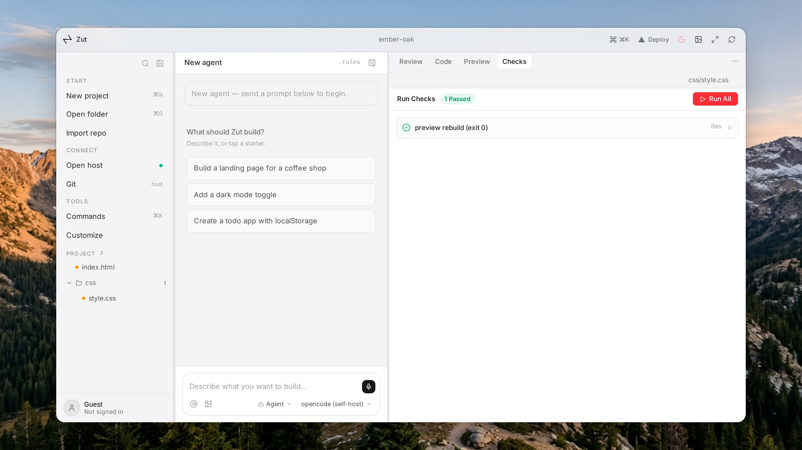
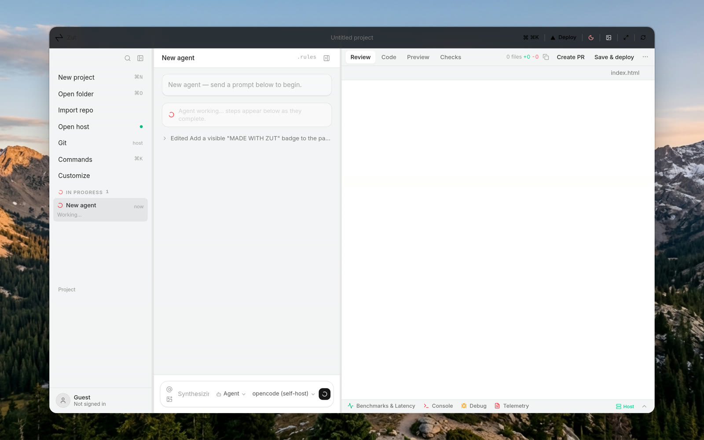
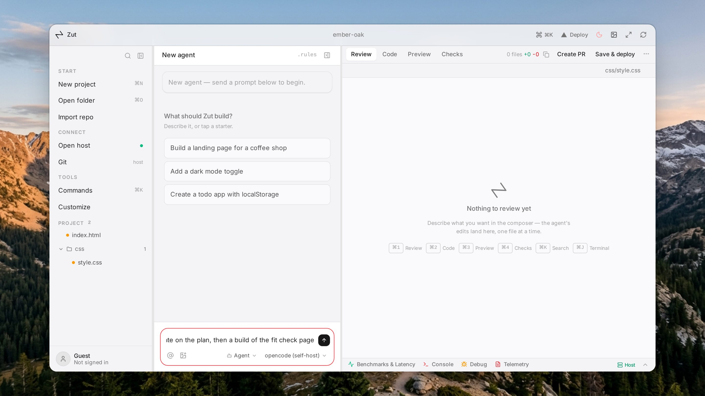
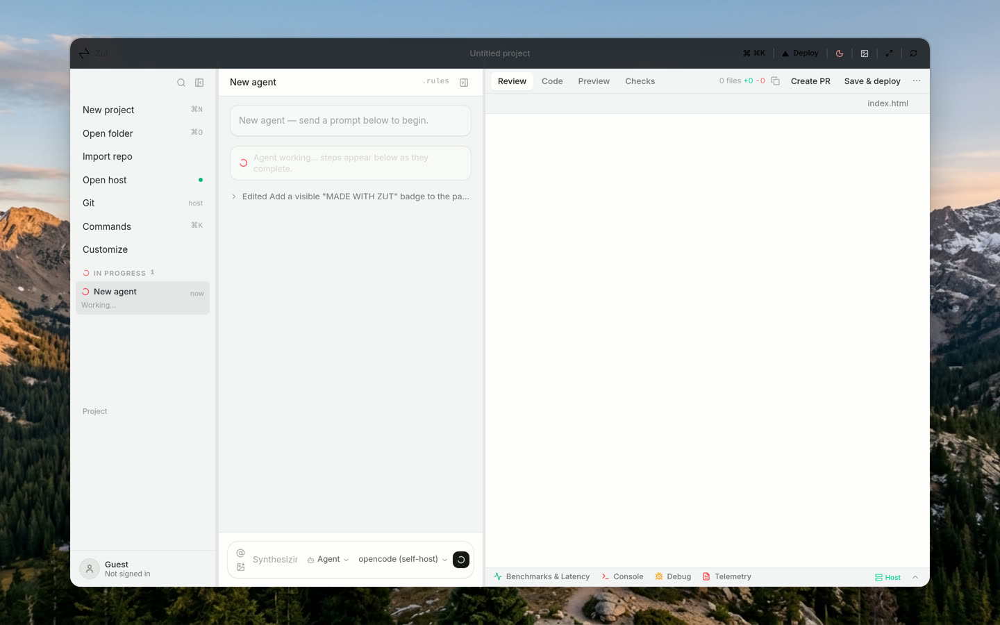
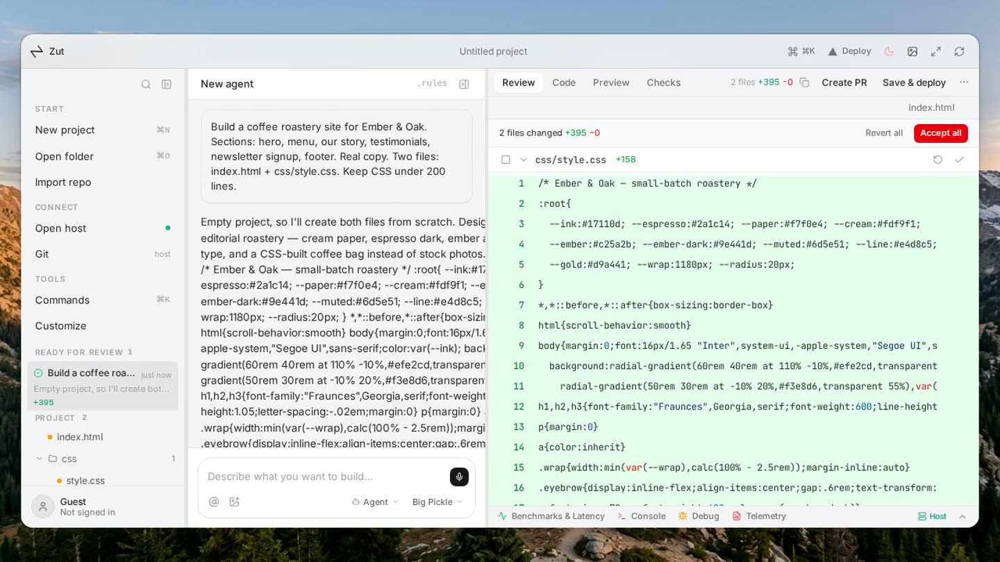

Agents turn ideas into code
Prompt in plain English. Every turn streams back as reviewable steps with checkpoints you can roll back to — the agent does the typing, you make the decisions.
Learn about agentsThe professional web IDE: build anything and everything — scripts to apps, any language. Bring your Claude, OpenAI or Gemini plan (or your own opencode), put the workload on compute you choose — and skip every toolchain install. Your laptop stays quiet. Nothing to set up.
Already have an account? Open the IDE

Plays well with your stack
Prompt in plain English. Every turn streams back as reviewable steps with checkpoints you can roll back to — the agent does the typing, you make the decisions.
Learn about agentsUnified and split views of exactly what changed, per file. Accept what you like, revert what you don't, and ask follow-ups in context.
Learn about diff reviewSandboxed preview rebuilds as you type, with desktop and mobile viewports and a console drawer. Heavy work stays in the tab — even on a Chromebook.
Learn about preview
Run checks, see pass and fail rows, and hand failures straight back to the agent. Then deploy to Vercel or push to GitHub without leaving Zut.
Learn about deploy
Zut Compute

In Cursor, the agent writes your files — then npm install and the build run on your machine. On a 4GB laptop that is the wall. Zut runs that part on our servers, so the machine you have is enough.
npm, pip, clang, Go, Rust — toolchains provisioned where the build runs. You never install a compiler again; laptops and Chromebooks stay cool.
Write code by hand when you want — Monaco, tabs, shortcuts, format, run. Let the agent type when you don't. Same window, your choice every turn.

Type what you want in plain English, or pick a starter chip.

Steps stream into Activity with a snapshot before every turn.

Accept what you like, revert what you don't, ask follow-ups.

Preview locally, run checks, then ship it to the web.
Models
Zut works with the plans you already pay — Claude, OpenAI, Gemini — and your own CLI/agent plans (self-hosted opencode, free local models). Plain code needs none at all. Keys are stored only on your device and never leave it except to call the provider you chose.
“Built my first client site on a Chromebook. The diff view is what sold me — I always knew what the agent did.”
“Checks + agent fix is a loop I can't give up now. Red row, one click, green row.”
“Opened my actual repo on a 4GB Chromebook. No install, no fan spin, same diff review.”
“Bring-your-own-key means my usage bill didn't change. The IDE itself just feels free.”
“Checkpoints saved me twice in one afternoon. Roll back, re-prompt, move on.”
“Preview on a phone viewport while the agent edits — clients review from a link. That's the workflow.”
Pick per session — Gemini, OpenRouter, Claude, ChatGPT, or anything your self-hosted opencode serves, including free ones.
Checkpoints, diff review, run history and console — everything around the agent, nothing in its way.
Zero install, offline-first, kind to cheap phones on bad networks. If it has a browser, it has Zut.
Pilot
Snapshot before every turn. Roll back any step.
Pilot
Unified and split views, per-file accept and revert.
Pilot
Rebuilds as you type, desktop and mobile viewports.
Pilot
Ship to Vercel, push to GitHub, share a link.
Pricing
Free — 50 agent turns a month
Free app — pay your provider
If it weren't for compute cost, Zut would be free entirely. We only ever charge what the machines cost.
FAQ
In Cursor the agent writes your files, but npm install, the build and the run all happen on your laptop — a 4GB machine or a phone runs out of road. Zut is the same agentic workflow with the heavy part on our machines (or yours, if you self-host). Same diffs, same review, none of the fan noise.
They generate an app in their cloud, then hand you a deploy. Zut keeps you in a real IDE: hand-write every line if you want to, review the agent's work as per-file diffs, connect your own Supabase, GitHub and Vercel. You are never locked out of your own code.
Yes — an account is how the product works now. Creating one is free, editing is free, and your keys stay in your browser. Your account ties your projects, your agent's home (your machine or ours) and your settings together.
No. Zut runs entirely in your browser. Optional self-hosting (run broker, opencode on your own machine) unlocks more power for free, but the IDE works without it — that is the point of Zut Compute.
Any you hold a key for — Gemini, OpenRouter, Claude, ChatGPT — plus anything your self-hosted opencode serves, including free models. Pick per session; type any model ID.
Yes. Zero install, no terminal, no build tools on your device. Heavy work runs in the browser tab or on a machine you choose.
Projects live in your own Supabase project or on your device. API keys never leave your browser except to call the provider you chose.
Connect your Vercel token once in account settings, hit Deploy, and you get a live URL. No anonymous deploys, ever.
Editing is free. During pilot, each signed-in account gets 50 agent turns a month (resets on the 1st) — counted locally until Zut Compute is live, then server-side. After pilot, you either bring your own key or cover raw compute — never more.
Editing is free. The agent runs on your machine or on Zut Compute.
Already have an account? Open the IDE